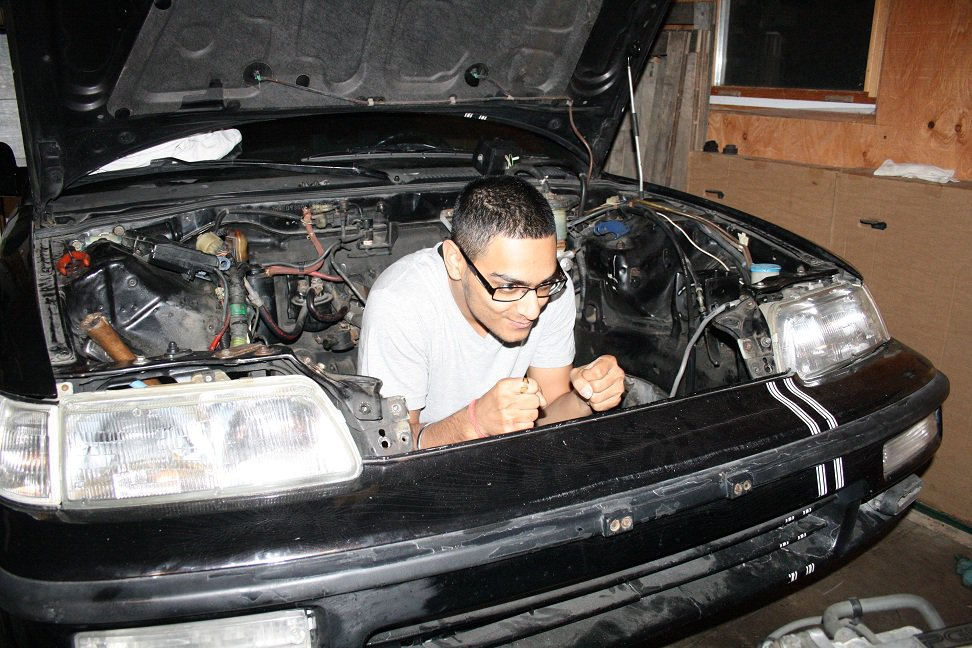

| I landed my very first job as a newspaper carrier for 'The Guardian'. It didn't pay much but for a 14 year old kid, it meant everything! Hand delivering my neighbourhood newspapers was the starting point of my career. And I was really good at it too, delivering around 300 houses every week. |
|
I love cars and instead of midnight walks along the beach, I prefer midnight drives along Mississauga Rd. My very first car was a 2013 Subaru brz (the background pic). Pushing a decent 200hp with 2.0L naturally aspirated FA20 engine. I shortly traded it for a 2012 bmw 128i which is a straight-6 NA. I even have a dedicated instagram channel showcasing my photography and love for cars, check it out!: @no1scar |
 |
| THE COST OF ASPIRATION IS SACRIFICE |
|---|
|
During my time working overnights as a billing analyst for an airline catering company, I developed software that automated time consuming manual processes. My program was essentially doing 50% of my job requirements which allowed me to sneak in the occasional power naps. On multiple occasions I got asked "how did you manage a full-time overnights job plus full-time schooling?" Answer: The opportunity is available for any abled body but at a extravagant cost: you may have to sacrifice sleep, family time, & birthday parties. You may have to settle for the 3 hour nap in the backseat of your car vs 1/2 hour if you drive home. You may have to settle for street food instead of home cooked meals. |
|
Technology replacing manual jobs is a hot topic to discuss. According to many studies, It's evident that the majority of people do not like the idea of losing their employement to machines; but does the concern really reflect the reality? Here is my personal take on this: I believe technology SHOULD replace manual reproducible processes within society, and not just within employement sectors; we already see this happening with home automation, autonomous vechicles, self-landing rocket boosters, cleaning robots, etc... From a cosmic perspective, I strongly believe the technological and scientific advancements we achieve will determine our fate. It's quite depressing to think if a big enough astroid came hurling at our planet, we simply arn't equiped to defend our selves at this current moment. As much as people hate the idea of automation, It's an evidently losing battle. We can't continue to run away from our destined future; we must embrace technology and strive to become better. Now I understand there are many valid arguements I havn't addressed but let's save that discussion for in-person. |
|
|
1. "Should technology replace human labour?" - Debate.org: Link to poll 2. "47 percent of currently existing jobs in America are at high risk of potential automation in the coming decades." - THE FUTURE OF EMPLOYMENT: HOW SUSCEPTIBLE ARE JOBS TO COMPUTERISATION? |
|
"I fear not the man who has practiced 10,000 kicks once, but I fear the man who had practiced one kick 10,000 times". - Bruce lee
|
|---|
|
One of the magnificant attributes of the human mind and body is it's ability to adapt. After a year of working full time overnights and being a full time student, I realized I had adapted to this stressful schedule. What I thought was overwhelming in the beginning, was no longer anymore. So what did I do? I pickup up a part-time job at my university as a Digital Communications Assistant. Yes folks, I was officially a full time student with a full time job + part time job. |
I was part of a website harmonization team focused in content management for the institution’s web presence: yorku.ca. My ability to take on complex tasks was quickly acknowledged by the department manager and I was given two addition projects:
|
| IM JUST GETTING STARTED |
|---|
| I remember the moment I had graduated from York University. I was writing two important letters. My first letter was a notice of resignation and the other was a thank you letter. I was excited to exit Gate Gourmet to persue my career in the tech industry and I was sad to leave my part-time campus job simpily because I met some amazing people and a manager who believed in me. All in all, I had acomplished one of my milestones in life, namely to graduate debt free without anyone's help. |
| Six days after my last day working as a Billing Analyst, I started my new job as a 'Software QA' at PointClickCare. One year later after that, I jumped a multiple roles up to 'Automation Developer' which brings us to my current employer and position. Some people might think I've "made it" but I am not done yet, I am just getting started... |